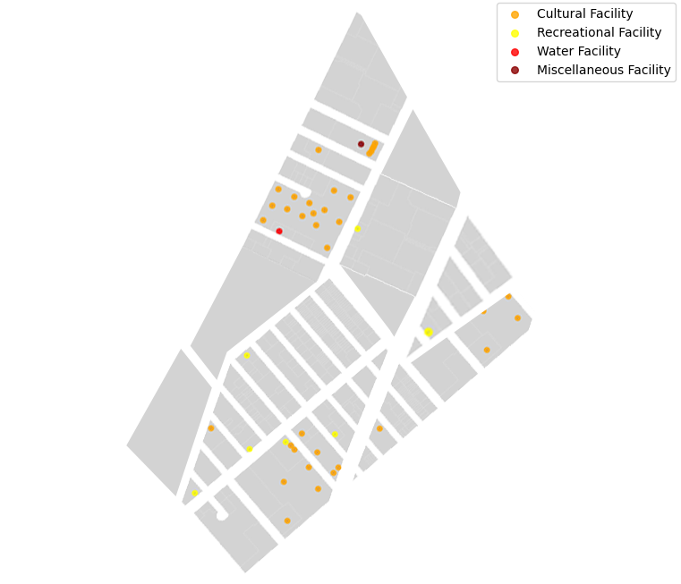

Tribeca (Triangle Below Canal Street) is one of New York City's most sought-after neighborhoods, known for its blend of historic charm and modern luxury. Originally an industrial district, Tribeca has transformed into a residential area that offers a mix of loft-style apartments, modern high-rises, and historic buildings converted into luxury condos.
